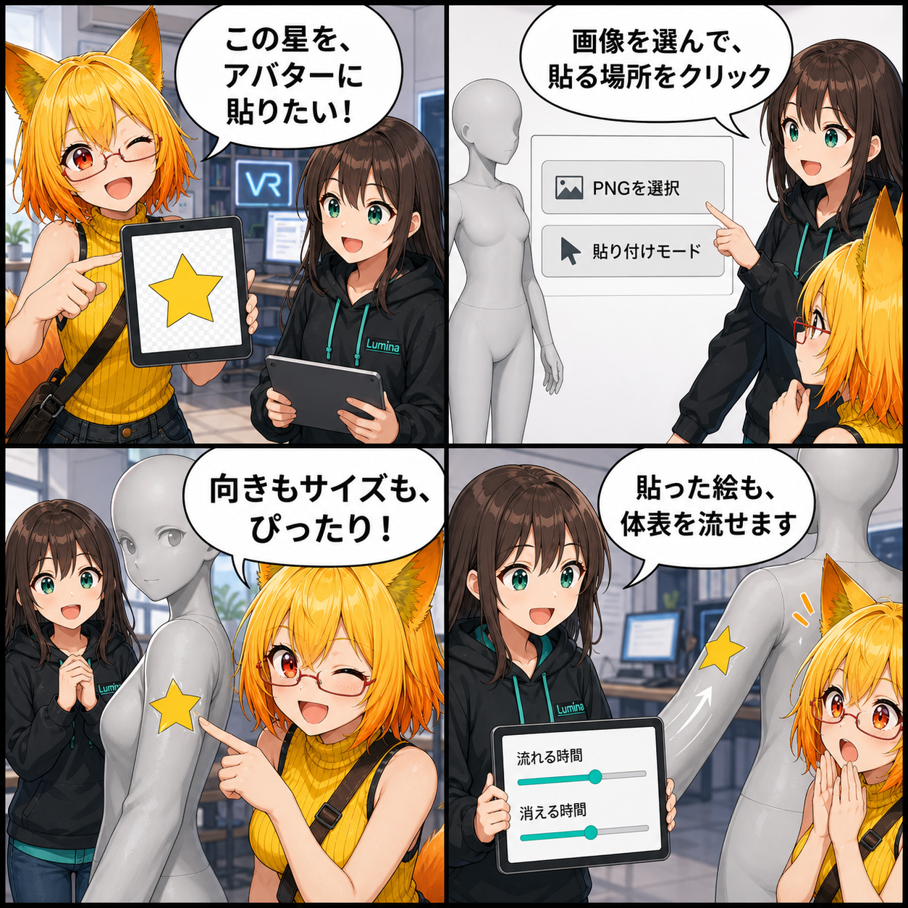

PNGを貼るだけじゃない。体表を流れるステッカーを実装
PNG画像をアバターへ貼り付け、その画像を体表に沿って流せる「Fluid Flow 2ステッカー機能」を実装しました。貼る場所をクリックし、サイズ・回転・解像度・流れる時間・消える時間まで一つのパネルで調整できます。
a7b37c5（「Fluid Flow 2ステッカー機能を実装」）。対象コミットは3件、集計差分は68ファイル、28,600行追加、5,548行削除でした。Viewer作業ツリーの未コミット差分は、集計期間内の実装と確認できないため実績へ含めていません。集計期間は 2026-08-15 03:00:00 JST から 2026-08-16 02:59:59 JST までです。
PNGを選び、アバターをクリックして貼る
デスクトップUIへ新しい「ステッカー」パネルを追加しました。PNGを選択して「貼り付けモード」を有効にすると、アバターの貼り付け可能な表面をクリックして画像を投影できます。
クリック位置の判定はRendererの見た目だけに頼りません。SkinnedMeshRendererをその時点の形状でベイクし、レイと三角形の交差から最も手前の表面を選びます。ポーズやBlendShapeで形が変わったアバターでも、今見えている場所へステッカーを置くための土台です。
サイズも向きも、貼る前に調整
ステッカーUIでは、画像のサイズと回転をスライダーで調整できます。画像本来の縦横比を保ったまま、クリックした面の法線とカメラ方向から投影の向きを組み立てます。テストでは、カメラ基準の投影で画像が左右反転しないことも確認しています。
描画用テクスチャの解像度は256、512、1024、2048 pxから選択できます。解像度を途中で変えても、すでに貼った内容を消さずにリサイズし、その後もFlowが動作する経路を検証しました。
貼った絵が、体表を流れて消えていく
今回のステッカーは、静止したデカールだけではありません。「体表面を流す」を有効にすると、Fluid Flow 2のシミュレーションを使って画像が表面に沿って移動します。「流れる時間」と「消える時間」を別々に指定でき、一定時間だけ流す、流れたあと徐々に消す、消さずに残す、といった見せ方を選べます。
色付きステッカーは濡れ表現とは独立したテクスチャへ保持します。そのため、ステッカーを貼ったからといって濡れの強さを書き換える設計にはなっていません。「ステッカーを全部消す」で、貼った画像だけをまとめてクリアできます。
専用Paint UVがない衣装にも届く
ステッカー対象は肌だけに限定していません。厳密なSurface Paint設定を持たない従来のVABでも、利用できるUV0を使い、肌はもちろん衣装などの非肌Rendererをステッカー専用の表面として扱える経路を追加しました。その場合もWetness用テクスチャを不要に確保せず、ステッカー機能だけを利用します。
同じ集計期間には、Surface Wetness設定UIと描画順の改善、MainSceneのUI配置保存も入りました。設定の整理と描画基盤の強化を先に積み上げたうえで、画像を貼り、流し、消すところまでを一つの操作としてつなげています。
4コマの裏話
4コマでは、ろひが星形PNGを選ぶところから始めます。ルミナが貼り付けモードを案内し、ろひがアバターの腕へステッカーを配置。最後は星が体表をするりと流れ、流れる時間と消える時間まで設定できることに二人で驚く流れです。
まとめ
画像を表面へ重ねるだけだったステッカーを、Fluid Flow 2の流体シミュレーションへ接続しました。クリック位置、投影方向、解像度変更、従来モデルのUV0フォールバックを固めたことで、アバターの見た目を遊びながら変化させられる機能になっています。
本日のひとこと： 貼った星まで、アバターの上を旅しはじめた。